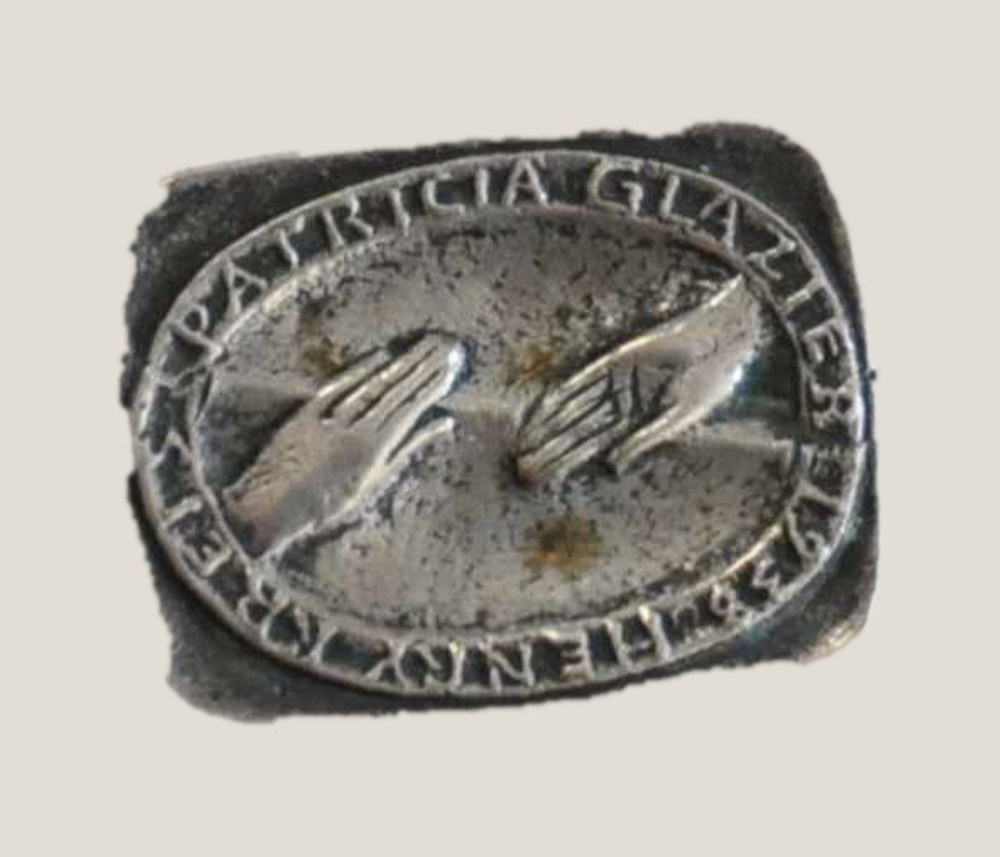
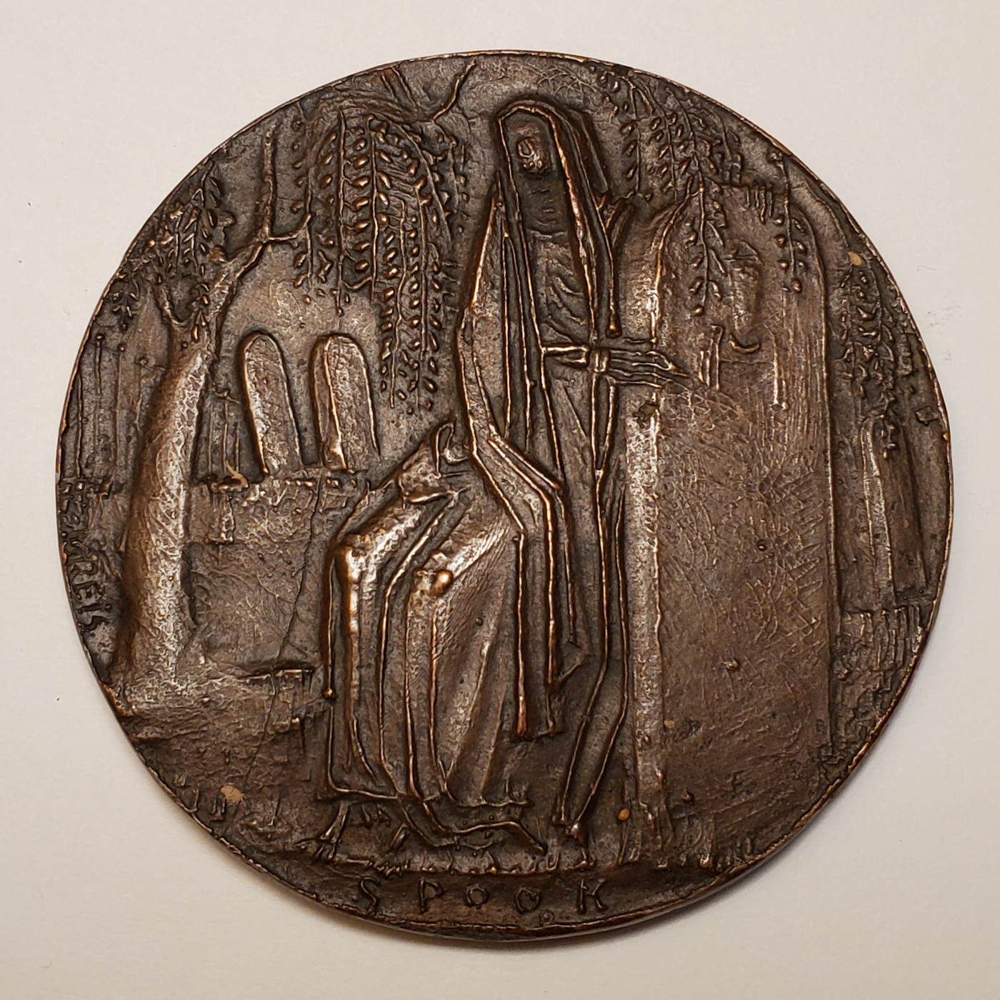
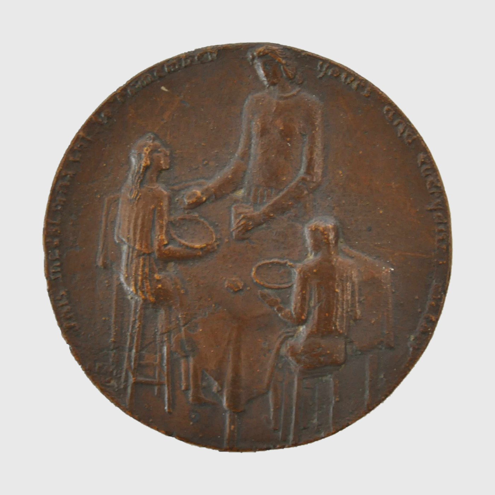
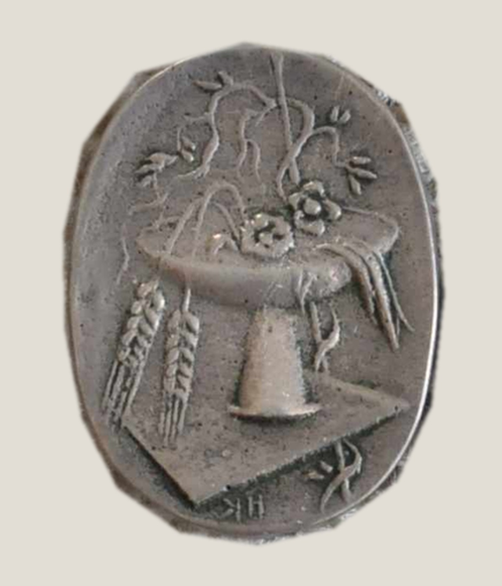

Personal and experimental works
One-Off &
Undocumented Medals
These medals survive in the Kreis family collection without production records or published histories. Descriptive titles are provisional unless an inscription supplies a name.
- Artist
- Henry Kreis
- Objects shown
- Four
- Dates
- 1938 and unknown
- Research status
- Ongoing
Personal medal · 1938
Patricia Glazier and Henry Kreis

This small, apparently one-off medal commemorates Henry Kreis's marriage to Patricia Glazier in 1938. Two hands reach toward one another at the center, while their names and the year encircle the scene.
Its dimensions, material, reverse, and method of production have not yet been documented.
Uniface medal · Date unknown
Spook

This three-inch uniface medal bears the word SPOOK at the bottom. No date, commission, production record, or related documentation has yet been located.
Medal · Date unknown
Untitled Presentation Scene

The subject of this three-inch medal appears to be a presentation or exchange between two figures. Its title, date, purpose, material, and production history remain unknown.
Only one face has been photographed. The medal should not be described as uniface unless the reverse is examined.
Token medal · Date unknown
Untitled Floral Composition

This small oval token medal presents an arrangement of flowers, grain, drapery, and a central vessel. Initials appear near the lower edge, but no context for the design has yet been located.
Its title, date, purpose, dimensions, material, reverse, and method of production remain unknown.
Research status
What the objects tell us
- The 1938 marriage context and object identifications come from the Kreis family collection.
- Dimensions are recorded only where supplied with the photographs.
- Unknown titles, dates, materials, reverses, and production histories are left unresolved rather than inferred.
- Object photographs from the Kreis family collection.